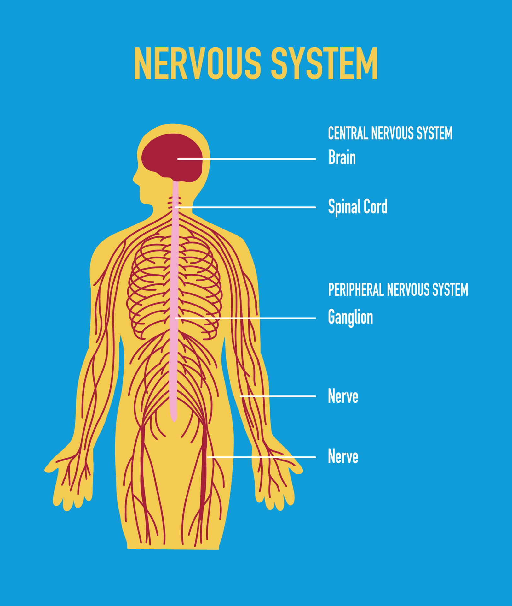

Control and Coordination
1. Introduction
Living organisms respond to various stimuli (like light, heat, nutrients) through control and coordination systems:
- Plants: Use hormones (phytohormones)
- Animals: Nervous system + Endocrine system
Coordination: The process by which different organs work together to perform a function
smoothly.
2. Nervous System (Animals)
2.1 Human Nervous System

| Component | Function |
|---|---|
| Neuron (Nerve Cell) | Basic structural and functional unit |
| Central Nervous System (CNS) | Brain + Spinal Cord (control center) |
| Peripheral Nervous System (PNS) | Nerves connecting CNS to body parts |
2.2 Reflex Action
Example: Withdrawing hand from hot object

3. Endocrine System
Hormones are chemical messengers secreted by endocrine glands.
| Gland | Hormone | Function |
|---|---|---|
| Pituitary | Growth Hormone | Controls growth |
| Thyroid | Thyroxine | Regulates metabolism |
| Pancreas | Insulin | Controls blood sugar |
4. Plant Hormones
- Auxin: Cell elongation
- Gibberellin: Stem growth
- Cytokinin: Cell division
- Abscisic Acid: Stress response
5. Differences
| Feature | Nervous System | Endocrine System |
|---|---|---|
| Speed | Fast | Slow |
| Duration | Short-term | Long-term |
Feedback Mechanism: How hormones regulate their own production (e.g., insulin lowers
blood sugar).